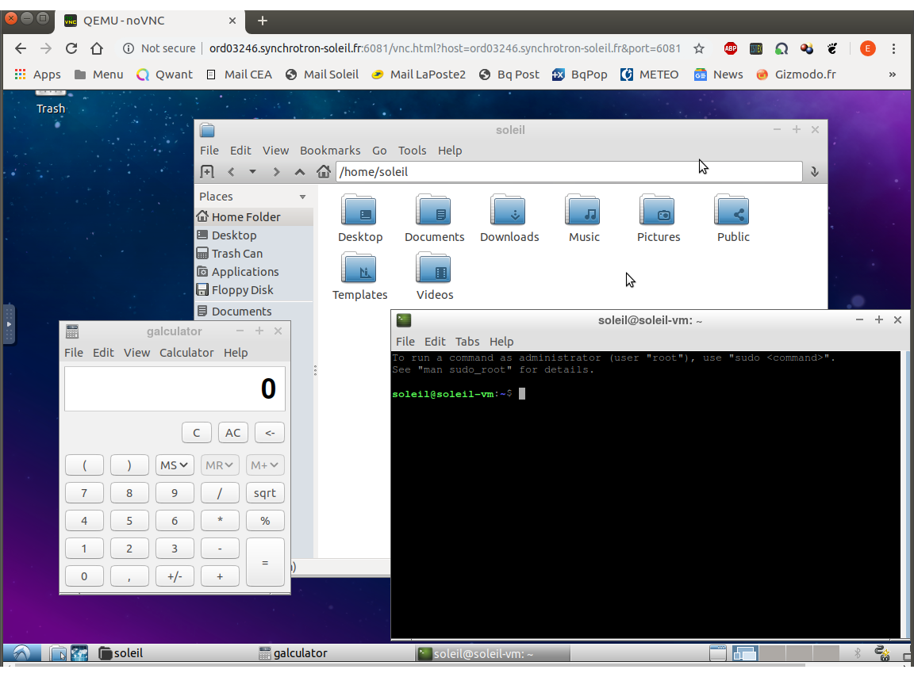
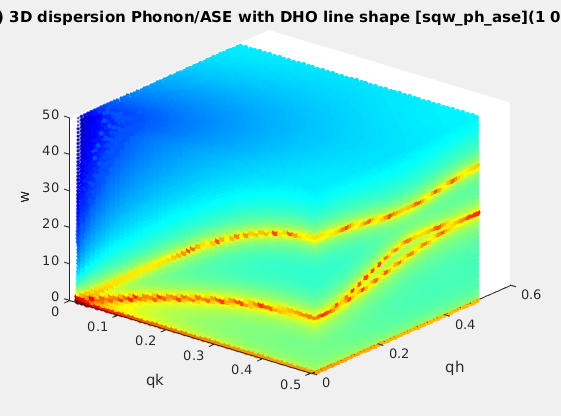

| TOOL |
INPUT => |
OUTPUT |
| cif2hkl |
A CIF/ShelX/FullProf
file |
A file with the F²(HKL) reflection list
for use with e.g. McStas
and McXtrace
(Laz/Lau) |
| idl2matlab |
An IDL code (file *.pro) | The corresponding Matlab/Scilab code. |
| looktxt |
any text file, with numbers and comments mixed | A data file containing the numerical data in a scientific file format (Matlab, HDF, XML, Scilab, IDL, YAML, HTML and Octave) |
| TOOL |
INPUT => |
OUTPUT |
| VirtualMachines |
A predefined virtual machine |
A browser showing the distant machine
screen |
| TOOL |
INPUT => |
OUTPUT |
| sqw_phonons
 |
A POSCAR, CIF, PDB, ... | Phonon dispersions from the Dynamical
matrix, using forces estimated by ab-initio using
ASE and a
selection of DFT codes (EMT, GPAW, ABINIT, Elk,
QuantumEspresso, VASP). Provides a sqw_phonon Model,
that can further be evaluated. |
| sqw_phonon Model evaluator |
a sqw_phonon Model, and
HKL specification (vector/plane/grid) |
Phonon dispersions evaluated on the HKL
range. |
| TAS_resolution |
a RESCAL-type configuration |
The TAS resolution evaluated at specified
HKL location. |
| TOOL |
INPUT => |
OUTPUT |
| neutron powder diffractometer |
A CIF,
SHELX or CFL |
The powder diffractogram obtained from
neutron scattering (using McStas) |
| neutron single-crystal diffractometer | A CIF, SHELX or CFL | The single-crystal diffraction obtained from neutron scattering (using McStas) |
| small angle neutron scattering |
A PDB
|
The small angle neutron scattering from e.g. proteins, colloids and polymers (using McStas) |